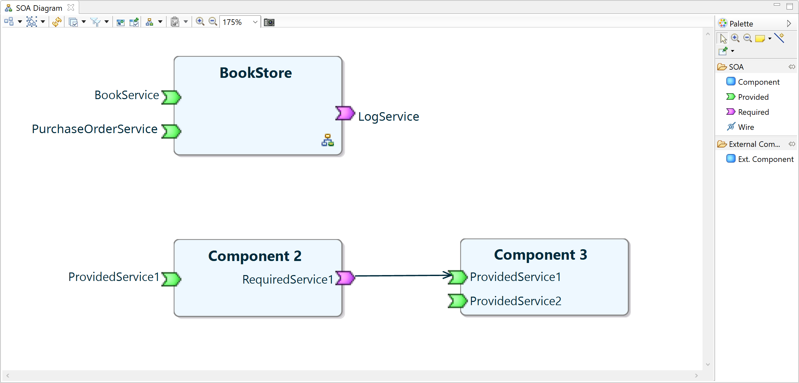
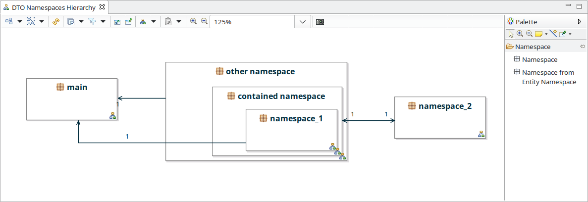
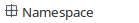
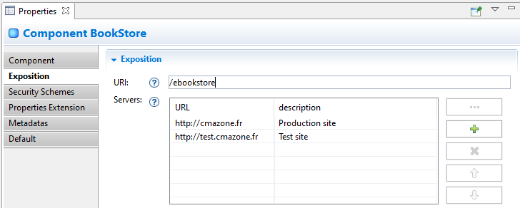
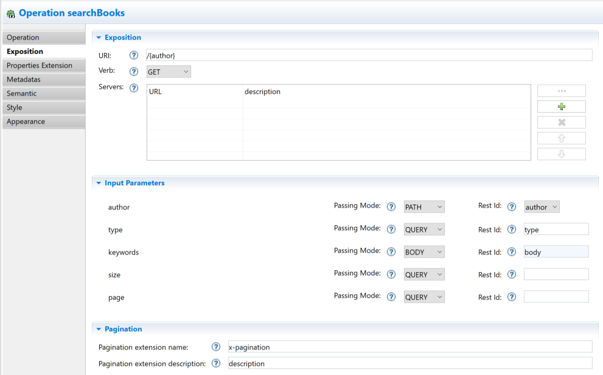
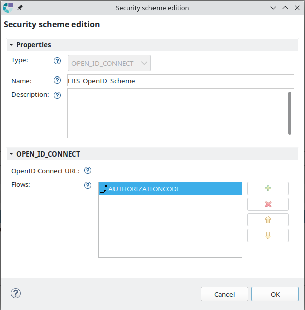
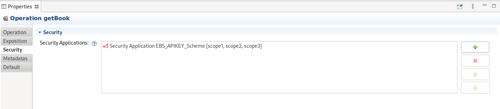
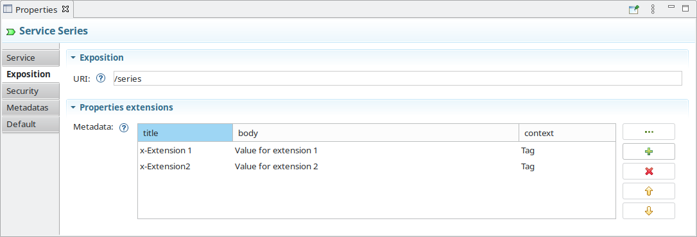

Copyright © 2008, 2023 Obeo - All rights reserved. This program and the accompanying materials are made available under the terms of the Eclipse Public License v1.0
SOA Designer permet de modéliser des composants métiers, avec leurs services et les structure de données qu’ils manipulent (Data Transfer Objects).
SOA Designer apporte le point de vue SOA Views qui permet de :
Un assistant permet la création de modèles SOA. Cet assistant est accessible via le menu :
File > New > Other ... > SOA Model (Catégorie IS Designer) :
Cet assistant permet de définir

Une fois l’assistant validé, un modèle vide est créé, et les représentations
SOA Diagram,
DTO Namespaces Hierarchy et
DTO Physical Names sont créées.
Les représentations
SOA Diagram et
DTO Namespaces Hierarchy sont ouvertes afin de commencer l'édition :
Lorsqu’un modèle soa est créé à l’aide de ce wizard, les points de vues SOA Views, SOA (Safr@n Consolidated view) et Environment View sont activés.
Le point de vue SOA Views fourni par SOA Designer est dédié à la modélisation des composants métier. Il permet de visualiser et modifier un modèle SOA au travers de différents types de diagrammes et vues de propriétés.
L’ouverture d’une session de travail sur un modèle SOA se fait par l’une des manières classiques à un Modeling Project :
L’ouverture de l’assistant
Viewpoints Selection permet de vérifier que le point de vue
SOA Views est bien activé.
Cet assistant est accessible dans le menu contextuel du
Modeling Project sous l’entrée de menu :
Viewpoint Selection

Une fois le point de vue SOA Views activé il est possible de créer ou visualiser les diagrammes SOA Views.
Chaque type de diagramme est rattaché à un concept SOA précis. Par exemple, un DTO Diagram est rattaché à un Namespace.
Pour créer un diagramme d’un certain type, sélectionner l'élément du modèle auquel rattacher le diagramme dans la vue Model Explorer puis, avec un clic droit, sélectionner le menu :
New... > #Nom du diagramme#
Renseigner le nom du diagramme et valider.
Par exemple sur l'élément racine Components, deux types de représentation peuvent être créés comme le montre la capture d'écran suivante :

Une fois créé, le diagramme apparaît dans l’arbre de la vue Model Explorer sous l'élément sur lequel il a été créé, et l'éditeur de diagramme est ouvert prêt à modéliser.
Si il est fermé, un diagramme peut être ouvert en double-cliquant sur le noeud correspondant dans la vue Model Explorer.
Attention, bien qu’ils continuent d’exister et qu’ils soient bien sauvegardés, les diagrammes des points de vues non activés sont filtrés de la vue Model Explorer. Celle-ci ne présente que les diagrammes des points de vue activés sur le Modeling Project.
Le
SOA Diagram offre une vue de haut niveau sur un modèle SOA, il peut être créé sur l’objet racine
Components.
Il permet de modéliser les composants métiers, les services qu’ils fournissent, les services qu’ils requièrent ainsi que des liens entre les composants. Ces liens créés entre services requis et services fournis expriment qu’un service fourni par un composant réponds à un besoin de service requis par un autre composant.

Le diagramme permet d’afficher et manipuler les éléments suivants :
Les outils fournis par la palette sont :

|
Création d’un composant métier. |

|
Création d’un service métier fourni par un composant. |

|
Création d’un service métier requis par un composant. |

|
Création d’un lien depuis un service requis vers un service fourni. Permet d’indiquer quel composant fournit les services nécessaires au fonctionnement d’un autre composant. |

|
Ajout d’un composant externe sur le diagramme. Permet de faire apparaitre un composant défini dans un autre modèle SOA pour créer des relations avec les composants affichés. Cet outil est disponible par l’activation du calque External Components |
Il est possible de naviguer depuis ce diagramme vers un diagramme Component Contract (décrit ci-après) par l’une des actions suivantes :
Le Component Contract Diagram permet de modéliser le détail d’un Component, il peut être créé sur un Component.
Il permet de modéliser :

Le diagramme permet d’afficher et manipuler les éléments suivants :
Les outils fournis par la palette sont :

|
Création d’un service métier fourni par un composant. |

|
Création d’un service métier requis par un composant. |

|
Création d’une opération d’un service. |

|
Création d’un paramètre d’entrée d’une opération. |

|
Création d’un paramètre de sortie d’une opération. |

|
Création d’un cas d’erreur d’une opération. |
Les calques sont activables dans la barre d’outils du diagramme par le menu déroulant .
Le
Component Contract Diagram fournit le calque
Meta Types qui ajoute l’information du méta-type (le type du type) de l’attribut dans le libellé des paramètres (pour les cas autres que les types primitifs).
Ceci permet de dissiper la confusion qui peut arriver entre un
DTO et un
Entity portant le même nom.
Ici,
DTO est ajouté dans la constitution du libellé du paramètre «books» :
Les DTO sont organisés en Namespaces (autrement appelés packages).
Le diagramme DTO Namespaces Hierarchy est destiné à gérer l’ensemble de cette hierarchie de Namespaces et peut être créé sur l’objet racine Components.
Il permet de créer, modifier ou supprimer des packages ainsi que d’accéder facilement (par double clic ou menu contextuel sur les Namespaces) aux diagrammes de DTOs d’un package.

Le diagramme permet d’afficher et manipuler les éléments suivants :

Les outils fournis par la palette sont :
|  | Création d’un Namespace. Un Namespace peut être créé sur le fond du diagramme ou à l’intérieur d’un autre Namespace. |
Il est possible de naviguer depuis ce diagramme vers des diagrammes DTO Diagram par l’une des actions suivantes :
Un diagramme de DTOs ( DTO Diagram) permet de gérer les DTOs d’un Namespace, il peut être créé sur un Namespace.
Le diagramme permet d’afficher et manipuler les éléments suivants :
Les outils fournis par la palette sont :

|
Création d’un sous-_Namespace_. |

|
Création d’un DTO. |

|
Création de DTOs à partir d’entités (cf. description ci-dessous). |

|
Création d’un attribut de DTO. |

|
Création d’une énumération. |

|
Création d’une valeur d'énumération. |

|
Création d’une relation simple. |

|
Création d’une relation de composition. |

|
Création d’un lien d’héritage. |

|
Création d’une relation simple bidirectionnelle. |

|
Création d’une relation de contenance bidirectionnelle. |

|
Ajout d’un DTO externe au Namespace courant. Permet de faire figurer sur le DTO Diagram un DTO défini dans un autre Namespace, donnant la possibilité de créer des relations inter-_Namsepace_. Cet outil est activable via le calque External DTOs |
L’outil de création de DTOs à partir d’entités permet de créer un modèle de DTO conformément à tout ou partie d’un modèle d’entités (voir Obeo Network – Entity Designer ).
Cet outil affiche la boîte de dialogue suivante permettant la sélection des entités et relations à prendre en compte :

La validation de cette sélection déclenche la création d’autant de DTO et de Relations qui avaient été sélectionnés.
En plus des outils définis par la palette, l’outil de drag and drop permet de déplacer un DTO d’un namespace à un autre.
Le drag and drop depuis le
Model Explorer d’un
DTO d’un autre
Namespace que le
Namespace sur lequel est défini le
DTO Diagram a pour effet de déplacer le
DTO depuis son
Namespace d’origine dans le namespace du diagramme.
Le
DTO ainsi déplacé reste référencé là où il l'était, comme par exemple en type de paramètre d’une opération SOA ou en référence sur une
Relation. Si le calque
External DTOs est activé, alors les
DTO externes figurent sur le diagramme avec une couleur différente et un label représentant leur nom qualifié :

L’exposition d’un composant consiste à publier tout ou partie des services qu’il fournit de manière à les rendre accessibles à des clients (autres composants ou systèmes, et potentiellement au travers d’un réseau).
L’ensemble des services exposés d’un composant constitue son API (Application Programming Interface).
Dans SOA Designer, le type d’exposition est paramétrable au niveau d’une Operation, sur l’onglet principal de la vue de propriétés :
La notion de visibilité ( Public/Privé) fait référence à la notion du même nom définie par les langages orientés objet et concernant les méthodes de classes. Ainsi, une Operation publique sera accessible depuis les implémentations des autres Operations du Composant ou bien depuis un autre composant destiné à être déployé dans la même application, mais il ne sera pas accessible depuis un autre système.
La notion de pagination ( Paged) indique lorsque les résultats retournés par l’opération sont paginés. Lorsque l’operation est paginée, il est possible d’indiquer quels paramètres définissent l’index de la page ( Page), et le nombre de résultats par page ( Size).
La notion d’exposition fait référence à la publication par une technologie permettant de la rendre accessible depuis un autre système, et çe typiquement au travers d’un réseau. C’est ce qu’adresse par exemple de manière non exaustive les technologies REST, SOAP ou gRPC. Ainsi, pour être exposée, une opération doit avoir une visibilité Publique.
SOA Designer propose les types d’exposition suivants :
Le type d’exposition couvert par SOA Designer est REST. Le type d’exposition SOAP n’est disponible dans le studio qu'à titre indicatif, aucun outillage spécifique n’ayant été développé pour l’exploiter.
L’icone des Operations diffère suivant le type d’exposition :
|
|
Privée | (type d’exposition ignoré) |
|
|
NONE | (opération publique non exposée) |
|
|
REST | (opération publique exposée en REST) |
|
|
SOAP | (opération publique exposée en SOAP) |
SOA Designer permet de :
La terminologie utilisée par SOA Designer provient du champ lexical de SOA (Service Oriented Architecture), dans lequel le concept de service est défini comme une fonction ou fonctionnalité. Cette définition est suffisament large pour autoriser un raffinement de la notion de Service en Operations, tel qu’il est fait dans SOA Designer.
Or, cette notion d'
Operation SOA est celle qui se prête à être en correspondance avec la notion de
Service REST.
Le concept de
Service SOA quand à lui, est mis en correspondance avec le concept de
Tag défini par la norme
OpenAPI.
Enfin, le concept de
Component SOA est mis en correspondance avec le concept d’API, ce qui est appelé de manière générique Composant d’Exposition.
De manière synthétique, voici les correspondances clé entre les deux terminologies :
| SOA Designer | OpenAPI |
| Component | OpenAPI |
| Service | Tag |
| Operation | Service |
La suite de ce document privilègie la terminologie SOA. Les exceptions à cette règle seront clairement explicitées.
Le concept de SOA Designer correspondant à une API REST OpenAPI est le Component.
Les données d’exposition sont accessibles via l’onglet Exposition de la vue des propriétés :

Une URI peut être définie à chaque niveau de profondeur dans le modèle sur les concepts Component, Service et Operation :

L’URL d’une Operation peut donc être calculée par la concaténation de l’URL du Component et de chacune des URI sur les trois niveaux Component, Service et Operation.
Des serveurs peuvent être définis au niveau du Component. Pour chaque serveur, l’URL correspondante doit être indiquée, et une description peut éventuellement être précisée.
Enfin, des informations générales sur l’API peuvent être définies dans la vue des propriétés:
Les champs Terms of Service et URL attendent une entrée au format URL:
Le champs
Email requiert une adresse e-mail valide: lettres, chiffres et/ou charactères spéciaux, suivis d’un ‹@›, et terminant par un serveur eventuellement séparé avec des points.
E.g., nom.prenom@intradef.gouv.fr ou contact@obeo.fr
Les champs attendant une URL sont eux aussi vérifiés, et attendent une URL valide: commençant par http://, https://, ftp://, ou file://, et suivi de charactères (lettres, chiffres, symboles) terminant par une extension précédée d’un point ‹.›.
Le concept en correspondance avec le Tag OpenAPI est le concept Service.
L’onglet principal du service permet d’en définir le nom, l’onglet Exposition permet d’en définir l’URI. Celle-ci peut rester vide.

Le concept en correspondance avec le Service OpenAPI est le concept Operation. Lorsqu’un type d’exposition autre que NONE est sélectionné comme expliqué au paragraphe Types d’exposition , l’onglet Exposition devient visible et accessible :

Le verbe correspond au verbe HTTP et peut prendre l’une des valeurs : GET, POST, PUT, DELETE, HEAD, OPTIONS, PATCH, TRACE.
Comme au niveau Component, il est possible de définir l’URI d’une Operation ainsi qu’une liste de serveurs.
Dans le cas où l’opération définit des paramètres d’entrée, ceux-ci sont listés dans la section Input Parameters, qui offre la possibilité de définir le mode de passage et les identifiants REST de chacun d’eux. Ceci est expliqué plus en détail ci-dessous dans la section Modélisation d’un paramètre d’entrée .
Le contenu de l’onglet Exposition d’un paramètre n’est pas le même pour un paramètre d’entrée, de retour ou d’erreur.
L’identifiant REST est un moyen pour identifier un paramètre autrement que par son nom, et a des particularités liées au mode de passage du paramètre.
Pour un mode de passage
BODY, l’identifiant REST n’a pas de sens.
Lorsque le mode de passage
BODY est sélectionné dans la liste déroulante, la vue de propriétés affiche à côté de celle-ci une zone de texte non modifiable affichant le texte «body» :

Pour un mode de passage
PATH, l’identifiant REST doit correspondre à l’un des identifiants définis entre accolades dans l’URI de l'
Operation.
Lorsque le mode de passage
PATH est sélectionné dans la liste déroulante, la vue de propriétés affiche à côté de celle-ci une autre liste déroulante proposant un choix déduit de l’analyse de l’URI de l'
Operation. Ainsi, si l’URI est «/{country}/{author}», la liste déroulante proposera les deux choix «country» et «author» :

Suite à une édition de l’URI d’une Operation, il est possible que la valeur de l’identifiant REST d’un Parametre PATH ne soit pas dans l’URI. Dans ce cas un message d’erreur est affiché :

Pour un mode de passage
QUERY,
COOKIE ou
HEADER, l’identifiant REST permet d’identifier le paramètre soit dans l’URL d’appel du service REST, soit dans le cookie, soit dans le header HTTP.
Lorsque l’un de ces modes de passage est sélectionné dans la liste déroulante, la vue de propriétés affiche à côté de celle-ci une zone de texte libre permettant la saisie de l’identifiant :

Lorsqu’une opération est définie comme étant paginée, des listes déroulantes apparaissent dans la vue des propriété de l’opération afin de spécifier les paramètres entrant pouvant être utilisés pour définir l’index de la page, ainsi que le nombre d'éléments par page.
Dès lors qu’une opération est paginée, sa représentation dans le diagramme est décorée d’une icone supplémentaire:
Enfin, dans le cas où l’operation est paginée, une extension de propriété peut-être définie afin d’indiquer lors de l’export OpenAPI si l’opération est paginée.
L’onglet Exposition des vues de propriétés pour un paramètre de retour ou d’erreur présente la même IHM permettant de saisir un code de status et une description :

Le bouton à droite de la zone de texte Status Code ouvre une boîte de dialogue permettant de saisir facilement parmi une liste de valeurs par défaut des couples code / description.
Le dialogue propose les codes de succès dans le cas d’un paramètre de sortie, et des codes d’erreur dans le cas d’un paramètre d’erreur :


Les schemas de sécurité sont définis sur l’onglet Security Schemes de la vue de propriétés d’un Component :

Cette vue permet de créer (
 ), supprimer (
), supprimer (
 ) et réordonner (
) et réordonner (
 ,
,
 ) les
Security Schemes du
Component.
) les
Security Schemes du
Component.
La création d’un
Security Scheme déclenche l’affichage d’une boîte de dialogue permettant de spécifier son type, son nom et sa description :
Un double clic sur un Security Scheme déclenche l’affichge d’un dialogue d'édition permettant de spécifier les données spécifiques au type de Security Scheme.
-
Api Key:
Un
Security Scheme de type Api key permet la définition d’une clé, ainsi que la spécification de sa localisation: dans le header, la requête, ou le cookie.
-
HTTP:
Un
Security Scheme de type HTTP défini un schéma d’authentification de type Basic, ou Bearer.
Dans le cas d’un schéma d’authentification de type Basic, le server attendra un mot de passe de type username:password, encodé en base-64.
Dans le cas d’un schéma d’authentification de type Bearer, le bearer-format définit la manière dont le token est stocké.
-
OAuth2:
-
Open ID:

Les
Security Scheme de type OAuth2 et Open ID requièrent la spécification de
Flows, ainsi que leurs
Scopes respectifs:
Les
Flows représentent des scénarios que le client effectue afin d’obtenir l’accès à un token d’authentification.
Chaque flow propose des
Scopes. Ces scopes définissent un droit d’accès (restreint) a une fonctionnalité prodiguée par le serveur.
L'édition des valeurs saisies est modifiable par la suite en double-cliquant sur un SecurityScheme dans cette même vue de propriétés, ou bien dans la vue de propriétés d’un SecurityScheme lorsque celui-ci est séléctionné dans la vue Model Explorer :

Lorsqu’ils existent, les SecuritySchemes sont présentés dans la vue Model Explorer au niveau de profondeur suivant celui du Component.
L’utilisation des schémas de sécurité est configurable via l’onglet
Security de la vue des propriétés d’une
Operation (quelque soit son mode d’exposition ou sa visibilité) ou d’un
Service.
Nous prenons une
Operation comme example d’utilisation des schémas de sécurité dans le reste de cette section mais ceux-ci s’utilisent de la même manière sur un
Service:

Cette vue permet de sélectionner les
SecuritySchemes à appliquer à l'
Operation (
 ), supprimer une affectation de
Security Scheme à l'
Operation (
) et réordonner (
,
) les applications de
Security Schemes.
), supprimer une affectation de
Security Scheme à l'
Operation (
) et réordonner (
,
) les applications de
Security Schemes.
La suppression ne supprime pas le Security Scheme du modèle, mais simplement son affectation à l' Operation.
La sélection des Security Schemes ouvre une boîte de dialogue permettant d’ajouter, retirer, réordonner les affectations de Security Schemes à l' Operation :

Un double-clic sur un Security Scheme de type OAUTH2 ou OPEN_ID_CONNECT dans l’onglet Security ouvre une boîte de dialogue permettant de sélectionner les scopes à appliquer :
Les Security Schemes accessibles pour une affectation à une Operation sont ceux définis au niveau du Component auquel appartient l' Operation.
Quand au moins un
Security Scheme est appliqué à une
Operation, celle-ci est décorée avec l’icone
 . :
. :

Si son Service parent applique un Security Scheme, l' Operation est décorée avec l’icone .
Quand au moins un
Security Scheme est appliqué à une
Operation (soit directement, soit indirectement via son
Service parent), son icone dans la vue
Model Explorer est elle aussi décorée avec l’icone
 :
:
Bien que la spécification OpenAPI tente de tenir compte de la plupart des cas d’utilisation, des données supplémentaires peuvent être ajoutées pour étendre la spécification à certains moments.
Les propriétés des extensions sont implémentées sous forme de champs à motifs qui sont toujours préfixés par « x- », par exemple, x-internal-id.
Les éléments sur lequels il est possible d’ajouter des extensions de propriétés disposent d’un onglet supplémentaire «Properties Extensions» dans la vue Properties.

Cet onglet permet de lister les extensions de propriétés, d' ajouter, de modifier et de supprimer une extension de propriétés.
Ce dialogue est utilisé pour créer ou modifier une extension de propriété :
- le champ de saisie «Key» permet de saisir l’identifiant de l’extension de propriété. Le préfixe «x-» peut être omis il est alors automatiquement ajouté.
- le champ de saisie multilignes «Value» permet de renseigner la valeur de l’extension de propriétés sous forme d’une chaîne de caractères.
- la liste déroulante «Context» permet de choisir l'élément OpenApi/Swagger sur lequel sera attaché l’extension de propriétés lors de la génération.
Les contextes possibles pour chaque type d'élément SOA sont présentés dans le tableau ci-dessous.
| Elément SOA | Contextes possibles |
|---|---|
| Composant | OpenAPI, Server, Paths |
| Contact | Contact |
| Information | Info |
| Licencee | License |
| Service | Tag |
| Type | Schema |
| Attribut | Schema |
| Référence | Schema |
| Opération | Operation, PathItem, ApiResponses |
| Paramètre | Parameter, RequestBody, ApiResponse, Schema |
| Type de média | MediaType |
| Exemple | Example |
Les extensions de propriétés sont générées lors d’un export Swagger et insérées dans le modèle lors d’un import Swagger.
Une fois que les infomrations requises à la définition d’une API Rest sont modélisées, il est possible de générer un fichier de spécification Swagger.
Une fonctionnalité de prévisualisation est disponible en menu contextuel du Component :

Celle-ci ouvre un navigateur montrant le résultat de l’export dans Swagger UI, permettant de s’assurer que la génération produit un résultat satisfaisant :

La fonctionnalité d’export permet de produire des fichier Swagger au format
yaml ou
json. Elle est disponible en menu contextuel sur l’objet racine
Components ou bien sur l’objet
Component. Dans les deux cas, une boîte de dialogue invite à choisir le dossier de destination :

Suite à la validation du Dialogue, un fichier est généré par Component, avec la convention de nommage suivante :
<Nom du Component>-<Version du Component>.<yaml|json>
La fonctionnalité d’import Swagger permet d’importer un fichier de spécifiction Swagger dans SOA Designer sous forme d’un Component. L’import incrémental n’est pas supporté. Si un Component du nom de l’API existe déjà dans le modèle SOA, alors l’import échoue avec un message d’erreur du type «Component with name BookStore already exist.».
La fonctionnalité d’import Swagger est disponible en menu contextuel sur l’objet racine Components :

En cas de succès suite à l’import, un nouveau Component est créé, prêt à être utilisé dans un ensemble plus vaste de Components SOA.
La gestion des exigences pour un modèle SOA utilise le mécanisme transverse de gestion des exigences. Pour plus de détails, voir Obeo Network – Requirements Tooling .
Il est possible d’attacher de la documentation aux éléments d’un modèle SOA. Le mécanisme utilisé est le mécanisme transverse de gestion de la documentation : Obeo Network – Documentation Tooling .
Il est possible de créer des diagrammes d’interaction pour les éléments d’un modèle SOA. Voir la documentation Obeo Network – Interaction Tooling .
Il est possible de créer des diagrammes de machines à états pour les éléments d’un modèle SOA. Voir la documentation Obeo Network – State Machine Tooling .